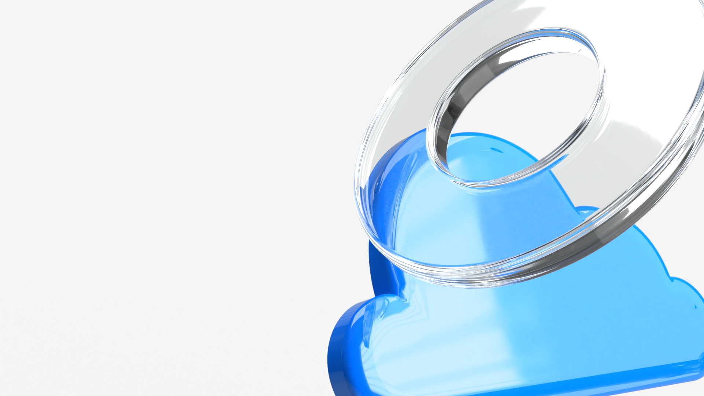
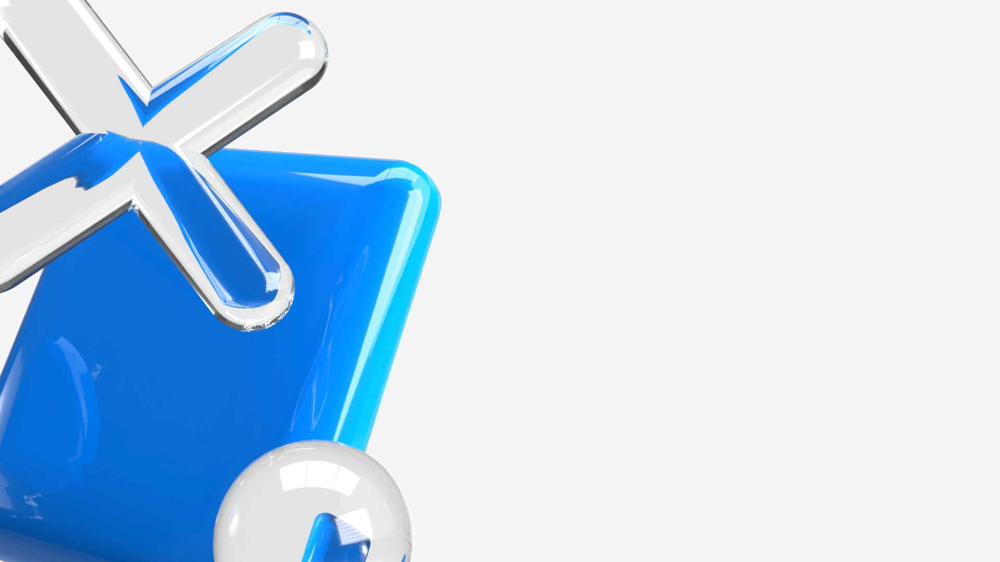
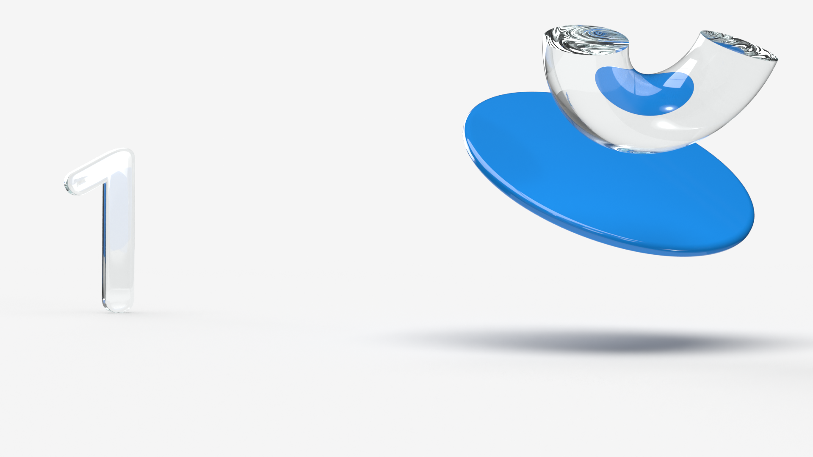

Building decks the Devspiration way
A short, opinionated guide to staying on brand without slowing down. Everything in this system — colors, type, the 3D prop library, motion, and the eight slide layouts — is documented here in one page.

Install
The whole system lives in two CSS files and an assets/ folder. Drop them next to your HTML and link them up — no build step required.
<!-- the only two stylesheets you need --> <link rel="stylesheet" href="colors_and_type.css"> <link rel="stylesheet" href="motion.css"> <!-- optional: deck shell for fixed-size slide stages --> <script src="slides/deck-stage.js"></script>
CDN-only by default
Nunito is loaded from Google Fonts via @import. For offline production builds, drop .ttf files into assets/fonts/ and swap the import for @font-face.
Voice & tone
Devspiration speaks like a colleague who has done the work and wants to save you the trouble. Direct, calm, never breezy. The visuals carry the energy — the copy stays out of the way.
The four rules
- Short sentences. Subject, verb, result. No hedging.
- Sentence case for every title, button, and heading. Title Case is off-brand.
- No emoji and no exclamation marks. The 3D props do the showing-off.
- You, not the user. Address the reader directly; never refer to them in the third person.
Guide to creating a branded presentation From the marketing team Pick the closest layout, fill it in, ship it.
// Title Case is off-brand
The Ultimate Guide To Creating A Branded Presentation!!! 🎉Гайд по створенню презентації у фірмовому стилі від команди маркетингу
Colors
Three blues, two neutrals. Two background modes — paper (white) or ink (#303030). No gradients, no off-whites.
/* lift these tokens straight from colors_and_type.css */ :root { --ds-blue: #1B9CF8; /* primary brand */ --ds-blue-electric: #0023FF; /* hyperlink only */ --ds-blue-soft: #8ACFF5; /* tints, charts */ --ds-ink: #303030; /* text + dark bg */ --ds-mist: #F5F5F5; /* alt background */ }
Never tint icons blue
Blue belongs to the 3D props and CTAs. Icons stay pure ink on light surfaces and pure paper on dark.
Typography
Nunito, from Google Fonts. Two weights see real use: 400 for body, 700 for everything bold. 800 is held in reserve for hero numerals.
3D props
Sixteen glossy objects in the brand library. One prop per slide, cropped past the edge, never centered. They do the talking.






Rule of one
Use a single prop per slide unless you're staging a hero / micro pair where the sizes are very different.
Motion
Glassy and quiet. The default easing is cubic-bezier(.16, 1, .3, 1) — a settle curve that lands without bounce. Entrances rise (translate up + fade), they don't spring.
<!-- one class per element; the stage activates them --> <section data-deck-active> <h1 class="m-rise m-hero">Headline</h1> <ul data-stagger> <li class="m-rise">One</li> <li class="m-rise">Two</li> <li class="m-rise">Three</li> </ul> </section>
See the sample slide deck for entrance animations applied in context, the playground for terminal + flow transitions you can run, and the Design System tab for the motion preview cards.
Interactive playground
Some flows are best shown end-to-end. The playground ships three reusable window frames — .pg-browser, .pg-terminal, .pg-editor — plus a .pg-flow stepper that cross-fades between them with the glass-settle ease. Terminals can type out scripted Claude Code sessions one beat at a time.
Scripting a terminal
Drop a .pg-terminal with a data-script attribute and the matching script name in playground.js. Each beat is {type, text, delay}; the engine handles the typing rhythm and ANSI-style colors.
Callouts
Four variants — info, tip, warn, danger. They are sparing by design; if a section needs three of these the section is doing too much.
Info
For neutral context, footnotes, or shipping caveats.
Tip
For best-practice nudges, short cuts, or "you probably want this".
Warn
For things that will trip up someone skimming.
Danger
For destructive actions or hard rules. Use almost never.
CSS tokens
The full token reference lives in colors_and_type.css. The Design System tab on the right of your window walks through every group with live preview cards.
Contact marketing
Found something off-brand? Need a new prop, a new layout, a new icon set? Ping the marketing team in #brand-help on Slack or drop a flag on the closest example.
Template originally built by Marta Shanaida · Devspiration marketing · 2023, rebuilt as a docs surface 2026.